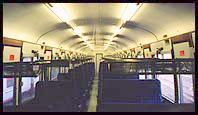
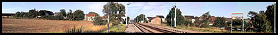
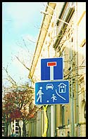
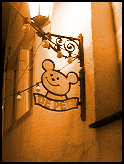
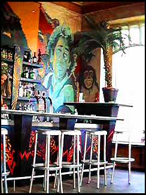
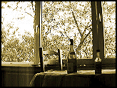
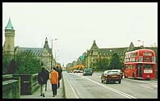
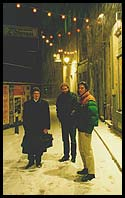

travel - Sunday, 12 July 1998

I’ve escaped, and as the train pulls out of Cambridge I know there’s no going back. Actually the final moment of commitment was when I stood outside the front door of my flat with the keys in my hand, pausing before I dropped them through the letter box. I wasn’t really checking that I had taken all my bags down to the taxi; I was trying not to panic about everything that I had probably forgotten.
Yesterday I didn’t feel remotely apprehensive about spending six months in Luxembourg - a country I’ve never been to. I guess that the things that I do for the first time these days are rarely a big deal; moving to a different class at school was more scary than moving to a different country is now.
Today is different though: I have been in a state of mild panic since I got up. Forget everything that I remembered: new passport, money, train tickets, post redirection, dry cleaning, telephone, electricity, gas, estate agent, bank, building society, keys, bags, inventory; I’m just thinking about everything that could go wrong. I doubt that I’ll really relax until I’ve checked into the hotel, run an outrageously deep bath and settled down to watch the World Cup final on French television.
Right now I’m glad that this train is so smooth and quiet: not all of the effects of yesterday’s champagne, Guinness, bitter and margarita have worn off - just the good ones. I’m even more glad that I chose not to fly: I can do without busy, noisy airports and cramped aeroplanes. Besides, I’m not in a hurry and the Eurostar does not have a baggage weight limit, although this may turn out to be a mixed blessing when it comes to carrying my suitcase, rucksack, suit carrier and flight bag.
Seven hours, half a book and 600 km later...
Off the train; wander along the platform, across Place de la Gare, into the hotel; explain to the Luxembourgoise in reception that ‘this is my address now’. Now I’ve arrived.
first day - Monday, 13 July 1998

I met one of my colleagues for the first time today when I went to the railway station to catch the morning train into work. Getting on with other people from the company is more important than ever when there are only three or four of you on one site. Fortunately, it seems that when colleagues who don’t know each other are thrown together, on a training course for example, they tend to get on well with each other. It says a lot for the company’s recruitment policy, presumably, that you colleagues are more likely to be outgoing people whom you end up in the pub with than clones with the same background and an identical CV.
Living in a hotel isn’t as boring as some people would have you believe. In fact, I quite like living out of a suitcase for a month every now and then. It’s good to start off somewhere right in the centre of town; and you get to appreciate that personal possessions are over-rated. Besides, it’s nice to have someone else wash and iron your shirts, make your bed and mop up the bathroom floor. The best bit is that you can ‘treat the place like a hotel’ - something I had always wanted to do ever since my mother used to nag me as a teenager.
day two - Tuesday, 14 July 1998
 I reckon that I can now remember at least two people’s names and two words of Luxembourgois. As far as I am concerned, learning the local minority language is a challenge that I have to take up, just ‘because it’s there’. Note: I don’t do mountain climbing. Today the challenges are more down-to-earth, though: open a bank account and find a flat.
I reckon that I can now remember at least two people’s names and two words of Luxembourgois. As far as I am concerned, learning the local minority language is a challenge that I have to take up, just ‘because it’s there’. Note: I don’t do mountain climbing. Today the challenges are more down-to-earth, though: open a bank account and find a flat.
I reckon that the main reason why flat hunting is so depressing is that meeting estate agents distorts one’s idea of what the average person is like. Anyway, since I have no idea what to expect from a flat in this country, I reckon that I should see at least half a dozen before I make any decisions, not least because they want one month’s rent in advance, another month’s rent for the estate agent’s fee and two or three months rent as a deposit. That’s a really big cash advance for expenses, especially in Belgian Francs.
day three - Wednesday, 15 July 1998

I needn’t have worried about getting stuck into the work on the first day because I was left to get on with it for three whole days before we first discussed what we were going to do. This gave me time to read lots of documentation and play with the new software tools. I guess that this is much the same as on any project; so I might be in Luxembourg, but in the office it might as well be Surrey: one thing that doesn’t seem to change much when you go overseas is the work.
I’m still managing one name and one bit of Luxembourgois per day. If I keep this up for six months then I’ll be doing well. I have also managed to open a bank account - it took ten minutes and I didn’t even need any money to open it with. I hope everything turns out to be that easy; this definitely isn’t France. Next I have an appointment to see two more flats, followed by a visit to the telephone shop.
day four - Thursday, 16 July 1998

For some reason lots of people go out on Wednesday nights here. That’s a bit early in the week for a Friday night warm up, but it breaks the week up and makes getting up on Thursdays more of a challenge. I made it this morning though. I’ve also discovered that bars here usually serve good coffee (Illy or Lavazzo) for reasonable money, and with a little biscuit or bit of chocolate on the side if you go to the right place. Better yet, you can get 33 cl of Hoogaarden for about £1.25, which is a definite improvement on £2.50 for 25 cl of cheap lager in Paris last year.
Hmm, I ought to think about getting some sleep some time this week. To think that I was going to give up alcohol for a while and stay at home/hotel and read some good books.
day five - Friday, 17 July 1998

Anyway, now that the initial panic is dying down, and things like flats, telephones and e-mail will hopefully sort themselves out, it really feels like being on holiday in the evenings after work. We can do as we please, with no hassles or obligations to be anywhere, having left most of our responsibilities back in the UK. That’s not as bad as it might sound because no-one in the UK depends on me, and on International Assignment you get enough interim flights home to be able to visit family and friends. Besides, there’s always that lost art of letter writing and those new-fangled telephone things, which reminds me - I’d better ring the UK and let a few people have my contact details.
day six - Saturday, 18 July 1998
The highlight of today was finding a two-storey aircraft hanger of a supermarket where, most notably, you can get six 33 cl bottles of Hoogaarden for about £1.40. I divided the day between sleeping all morning, telephone shopping, sitting in the park and the evening’s jazz festival. Le Jazz Rallye was a great excuse to try out half a dozen bars down by the river, wander the streets with thousands of other people and listen to some really good musicians.
By now I’ve seen enough to know that this is a good place to live and that I’m not going to get bored too quickly.
day seven - Sunday, 19 July 1998

After a lot of practice, I’m getting good at having the perfect Sunday. All I need is a hot sunny day, a pleasant town with a number of good cafes and nothing better to do than drift from one to another, reading books and newspapers and writing postcards and diaries of International Assignments. Another good thing about going on an International Assignment, like working on client site in the UK but more so, is that I get to explore a new town and perhaps find a new cafe to add to my
European top ten.
The best thing about today is not the weather or even the free rock concert in the main square that I stumbled upon during the afternoon: I am now lounging on a sofa in the best cafe I’ve found in a long time - Am Häffchen.
Paris - Monday, 27 July 1998
Since it is only a few hours away on the train, I thought I’d take today as annual leave and spend a long weekend in Paris. My excuse for the trip, as if I needed one, was to celebrate Barry’s birthday. Barry, of course, is our man in Paris - a Logibod who has been on assignment there since the autumn of 1995.
As it happens, I spent eight months on an International Assignment in Paris last year; having only joined Logica as a new graduate three weeks beforehand. Now that, as they say, is another story...
Germany - Saturday, 1 august 1998

Luxembourg is handy for Germany as well, so I've just been there for
the afternoon. This is great - today has been even more like being on holiday. CDs are really cheap in Germany so I did a bit of shopping, before all of the shops shut up at four o’clock: I got a Garbage album for about eight quid - not bad.
week four - Saturday, 8 august 1998
I’ve been here for four weeks now, and I’m pretty settled into my new way of life. Out drinking last night it seemed perfectly normal to be hearing several different languages at the bar and that they were still serving at one o’clock in the morning. Unfortunately, I haven’t worked out how to get enough sleep to want to stay out until 4 a.m. when I go out on a Friday night. Today though, I stayed asleep until well after noon, just because I could, so tonight will a bigger part of today, if you see what I mean.
Today’s highlight was the discovery of yet another cafe where I can sit on a comfy chair, drink good coffee and listen to some jazz while I read or write. This is encouraging because I was beginning to worry that I had seen most of what there is to see in Luxembourg city, which is bigger than
Cambridge, but not by much.
Tuesday, 18 august 1998
 So I’ve been here for five weeks now, which is ‘long enough’ in the sense that I don’t notice the passage of time any more: I’m used to it here now. The initial I’m-on-holiday feeling has given way to an easy familiarity with the place. The consistently perfect weather that we’ve had for a while helps, although that is sure to be the first thing to change during the next few months.
So I’ve been here for five weeks now, which is ‘long enough’ in the sense that I don’t notice the passage of time any more: I’m used to it here now. The initial I’m-on-holiday feeling has given way to an easy familiarity with the place. The consistently perfect weather that we’ve had for a while helps, although that is sure to be the first thing to change during the next few months.
Now that I’ve settled into more of a routine, I can no longer remember how long I’ve been here without working it out. Checking into the hotel last month seems half a world away, not the mention the last few weeks before leaving the UK.
I guess I saw the vacancy for this project some time around the end of June and first talked to the project manager a few days after that. I’d only asked about a few other projects and spoken to a few people before I got caught up in all of this. Inevitably, crunch time came and the project manager wanted a definite ‘yes’ or ‘no’. I figured that I could do with a few days to see what else came up; she figured that I could have twenty minutes to think about it. The thing was, the client had seen my CV and wanted to do a telephone interview. Although it was still okay to tell the project manager that I had changed my mind, once I spoke to the client I would not be able to back out - that wouldn’t make Logica look very good.
So what can you do in twenty minutes? I rang one of the guys who had already agreed to go, to find out what he knew about the project; I rang someone else who knew of the project manager to find out if we were likely to get on; I found a Web page with lots of photos of Luxembourg and where I would be working, as well as the Luxembourg tourist office in London, whom I rang to ask about the place where I was going to work; and finally I rang a friend who probably knows me better than I do to find out whether I was actually going to go. Apparently I was.

This put me in a novel position - I had two weeks notice of where I was going next. This meant that I would have time to get everything sorted out before I left, and to put (almost) all of my possessions in a van to take them away to be stuffed in my mum’s loft.
The next day the client gave the go-ahead and then, typically, that afternoon I got a phone call from the project manager of a project that I had really wanted to get onto before. If he had rung two days earlier I would have said ‘yes’ to his offer immediately. Anyway, after spending a while obsessing about whether I had been to rash in agreeing to go to Luxembourg - the big unknown, despite its size - I got over it and figured that I’d taken something of a unique opportunity.
Once I had sorted out the admin, sorted out the things I was working on, prepared to move out of my flat and generally sorted my life out there was only one more thing left to do: have a party! Fortunately I still managed to get up the next morning and was even almost ready when the taxi arrived. I got to the station on time, with tickets, money, passport and everything sorted. Either meticulous planning, incredible luck or divine influence must have been involved.
Finally, I managed to carry all of my luggage to the train, got on and sank into the seat. It was only then, as the train pulled out of Cambridge, that it occurred to me for the first time: I had escaped!
 I reckon that I can now remember at least two people’s names and two words of Luxembourgois. As far as I am concerned, learning the local minority language is a challenge that I have to take up, just ‘because it’s there’. Note: I don’t do mountain climbing. Today the challenges are more down-to-earth, though: open a bank account and find a flat.
I reckon that I can now remember at least two people’s names and two words of Luxembourgois. As far as I am concerned, learning the local minority language is a challenge that I have to take up, just ‘because it’s there’. Note: I don’t do mountain climbing. Today the challenges are more down-to-earth, though: open a bank account and find a flat.
{kind=link}
{kind=link}
{kind=link}
{kind=link}
{kind=link}